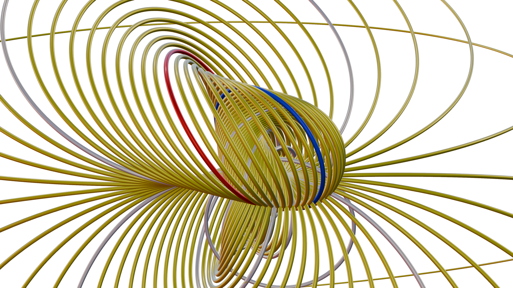

Demo Scenes
Interpolation of circles
This script is an example of using step-by-step visualisations and animation to describe the two rotors that can be constructed to interpolate between circles.

To run this example, ensure Geomviz is listening in Blender (See Using Geomviz) and paste the entire script directly into a Julia REPL or save it to a file and include() it.
using GeometricAlgebra
using GeometricAlgebraModels.Conformal
using Geomviz;
using Colors
using Random
# common functions
refl(B, A) = grade(B*A/B, grade(A))
norm(A) = √abs(A⊙A)
normalize(A) = A/norm(A)
function narrate(message)
printstyled("\n$message", italic=true)
printstyled("continue> ", color=:cyan)
readline(stdin) # pause for user
end
seed = rand(1:1000)
@show seed
Random.seed!(seed)
# create two random circles
A = wedge(up.(randn(Multivector{3,1}, 3))...)
B = wedge(up.(randn(Multivector{3,1}, 3))...)
A /= norm(A)
B /= norm(B)
# give the circles color to keep track of them later
orig = [
Styled(A, color=colorant"red")
Styled(B, color=colorant"blue")
]
geomviz(orig);
narrate("""
Consider the two circles A and B shown in the 3D Viewport.
If we reflect A in B with the formula A ↦ B*A/B, and vice versa,
we obtain two more circles:
""")
objs = [A, B]
objs = normalize.([refl(a, b) for a in objs for b in objs])
geomviz([orig; objs]);
narrate("""
Repeat this, taking each ordered pair of circles and producing another by reflecting the first in the second.
""")
objs = normalize.([refl(a, b) for a in objs for b in objs])
geomviz([orig; objs]);
narrate("""
If we continued forever, we would obtain the transitive closure of A and B under reflection.
(After two iterations, we already have $(length(objs)) circles...)
""")
narrate("""
Now, consider the rotor R = √(B/A) = exp(½ log(B/A)) sending A to B.
Generalising this to R = exp(λ log(B/A)), we obtain continuous family of circles R*A*~R passing through A at λ=0 and B at λ=1.
""")
λs = range(0, 8, length=81) .- 4
curve = map(λs) do λ
R = normalize(exp(λ/2*log(A/B)))
sandwich_prod(R, A)
end;
geomviz([
orig
objs
Styled(curve, color=colorant"yellow")
]);
narrate("""
Interestingly, this family (yellow) contains all the circles we generated from A and B under repeated reflections (white).
We can animate the curve to show its continuous nature...
""")
ts = range(0, 1/2, length=41)[2:end]
ani = animate(ts) do t
R = exp(t/2*log(A/B))
Styled(sandwich_prod.(R, curve), color=colorant"yellow")
end;
geomviz([
Styled(objs, "Thickness"=>0.05)
ani
]);
narrate("""
But the rotor we constructed is not unique! There is another choice which goes "the other way around"...
This time, consider R = exp(λ log(-B/A)), which has the same properties as before, but produces a distinct family:
""")
curvedual = map(λs) do λ
R = exp(λ/2*log(-A/B))
sandwich_prod(R, A)
end;
anidual = animate(ts) do t
R = exp(t/2*log(-A/B))
Styled(sandwich_prod.(R, curvedual), color=colorant"magenta")
end;
geomviz([
Styled(objs, "Thickness"=>0.05)
anidual
]);